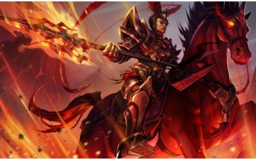

物品资料
团战定位
AD（Attack Damage，物理伤害）
普通攻击以及一部分英雄技能造成的伤害类型，可被护甲抵消。
AP（Ability Power，法术伤害）
大部分英雄技能所造成的伤害类型，可被魔法抗性抵消。
真实伤害
少数英雄的技能及泉水可造成此种伤害，无视所有抗性，无法以除护盾以外的任何手段抵消。

ADC（Attack Damage Carry）
物理输出核心
定位：提供持续物理输出，另外由于绝大多数英雄技能无法作用于建筑，团战时ADC往往需保持自身存活至最后，以便在团战获胜后快速拆除敌方防御塔。

APC（AbilityPowerCarry）
法术输出核心
定位：提供法术伤害以及控制。
特点：多为远程，技能伤害远高于普通攻击，比较脆弱但具有控制、逃生、单体或群体高额杀伤等技能。
T（Tank）
英雄定位之一
定位：团战先手冲锋切入控制敌人、承受伤害，保护队友特别是辅助及ADC，必要时牺牲自我牵制敌人以协助队友逃生或推进。
特点：多为近战，较高的防御及生命，具有减伤、群体控制、突进等技能，相同的攻击若作用于T身上将获得更少的收益。
辅助（Support）
团队位置、英雄定位之一。
定位：一般和ADC同走下路，保证ADC的生存及顺利发育，协助ADC击杀。
特点：多为远程，防御能力弱于T但高于ADC，往往拥有多种控制技能，以及可作用于友军的增益技能。
由于需要更频繁地使用技能，辅助英雄普遍贫蓝，并且需要将人头和小兵让给ADC，装备选择上以工资、撑蓝以及减CD为主。此外，辅助往往还负责为团队买眼，是整个团队的重要后盾。